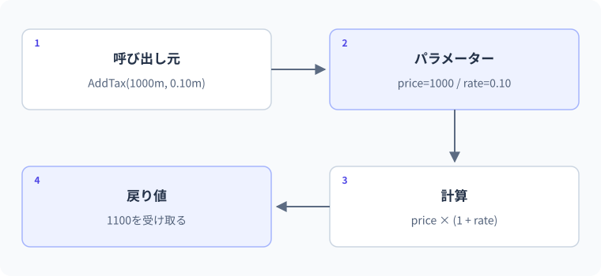

07 メソッドと引数 — 詳細解説
引数から戻り値まで。
図解：引数から戻り値まで

メソッドの入力・処理・戻り値
メソッドは、何度も使う手順や一つの役割に名前を付けた処理です。合計の計算を三か所へコピーすると、仕様変更時に三か所を同じように直す必要があります。メソッドへまとめると呼び出し側は目的を名前で読み、実装は一か所へ集められます。ただし、何でも大きな共通処理へ詰め込むと逆に理解しにくくなるため、入力と出力を説明できる単位にします。
引数は呼び出しで渡す値、パラメーターは定義側でその値を受け取る変数です。戻り値は処理の結果として呼び出し側へ返す値です。たとえばCalculateTotal(120, 3)の120と3が引数、定義にあるunitPriceとquantityがパラメーター、360が戻り値になります。
構文を一つずつ読む
int result = CalculateTotal(120, 3);
Console.WriteLine(result);
static int CalculateTotal(int unitPrice, int quantity)
{
int total = unitPrice * quantity;
return total;
}期待出力は360です。static int CalculateTotalのintは戻り値の型です。かっこ内の二つのintは受け取る値の型です。return total;はtotalを結果として返し、メソッドの処理を終えます。ここで定義しているのはトップレベル文から呼べるstaticローカル関数です。型に属するメソッドにも、引数と戻り値の考え方は共通です。
| 順序 | 実行する場所 | 状態 |
|---|---|---|
| ① | 呼び出し側 | 引数120と3を用意 |
| ② | CalculateTotalに入る | unitPrice=120, quantity=3 |
| ③ | メソッド内 | total=360 |
| ④ | return | 360を呼び出し側へ返す |
| ⑤ | 呼び出し側 | result=360として受け取る |
| ⑥ | 表示 | 360 |
メソッド内のtotalと呼び出し側のresultは別の変数です。同じ名前にしても自動的に共有されるわけではありません。スコープとは名前を使える範囲です。メソッドのパラメーターとローカル変数はそのメソッドの中で利用し、外から直接名前で読むことはできません。
呼び出しのStackを概念として理解する
実行中のメソッドには、どこへ戻るかや処理に必要な状態があります。呼び出しが重なる関係はコールスタックで観察できます。Stackは後から積んだものから戻る構造です。AがBを呼び、BがCを呼べば、通常はCからB、BからAへ戻ります。デバッガーのコールスタックは、エラーがどの呼び出し経路から来たかを調べるのに役立ちます。
- 1入口
CalculateTotalを呼ぶ
- 2CalculateTotal
引数を受け取り計算
- 3return 360
呼び出し元へ結果を渡す
- 4入口の続き
resultへ代入し表示
これは呼び出しの概念図です。JITによるインライン化で実際の呼び出し構造が最適化されることもあります。ローカル変数が必ず一つずつ物理Stack上の箱に置かれる、とまでは考えません。初心者段階では「変数の有効範囲」「どこへ戻るか」「何が渡るか」が説明できることを優先します。
値渡し：パラメーターは原則コピーを受け取る
int score = 10;
Increase(score);
Console.WriteLine(score);
static void Increase(int value)
{
value += 5;
Console.WriteLine(value);
}期待出力は15、次の行に10です。voidは戻り値がないことを示します。パラメーターvalueはscoreの値10のコピーを受け取り、15へ変わりますが、呼び出し側のscoreは10のままです。変更した値を利用したいなら、戻り値で返すと分かりやすくなります。
int score = 10;
score = Increase(score);
Console.WriteLine(score);
static int Increase(int value)
{
return value + 5;
}修正後の期待出力は15です。修正位置は戻り値の型・return・呼び出し側の代入の三か所です。変更した結果を返して明示的に受け取るため、どの変数が更新されるかを読み取りやすくなります。
参照型でも「参照の値」がコピーされる
配列は参照型です。参照とは配列の実体を指し示す値です。通常の引数ではこの参照がコピーされます。そのため要素の変更は同じ実体へ届きますが、パラメーターを別の配列へ差し替えても、呼び出し側の変数そのものは差し替わりません。
int[] values = { 1, 2 };
Change(values);
Console.WriteLine(string.Join(",", values));
static void Change(int[] data)
{
data[0] = 9;
data = new[] { 7, 8 };
Console.WriteLine(string.Join(",", data));
}期待出力は7,8、次の行に9,2です。string.Joinは複数の値を区切り文字で結合した文字列を返します。メソッド内でdataが新しい配列を参照しても、valuesは最初の配列を参照したままです。
| 時点 | values | data | 何が変わったか |
|---|---|---|---|
| 呼び出し前 | 配列A [1,2] | まだない | なし |
| 呼び出し直後 | 配列A | 配列A | 参照のコピー |
| data[0]=9 | 配列A [9,2] | 配列A [9,2] | 共有する要素 |
| dataへnewを代入 | 配列A [9,2] | 配列B [7,8] | dataだけ差し替え |
| 呼び出し後 | 配列A [9,2] | 利用範囲を終える | valuesはAのまま |
「参照型だから自動的にref渡し」という説明は誤りです。型が値型か参照型かと、引数を値渡しするか参照渡しするかは別の軸です。Lesson 13でも同じ図を使えるよう、変数と実体を分けて描きます。
ref・out・inの選び方
int count = 5;
Increase(ref count);
Console.WriteLine(count);
bool success = int.TryParse("12", out int parsed);
Console.WriteLine($"{success}, {parsed}");
static void Increase(ref int value)
{
value++;
}期待出力は6、次の行にTrue, 12です。refは呼び出し側の保存場所を参照して扱います。値を読む可能性があるため、呼び出す前に変数を初期化します。outは呼び出し先が値を設定して返す形式で、メソッドは正常に戻るすべての経路で値を設定する必要があります。
| 形式 | 呼び出し前の初期化 | 呼び出し先での代入 | 選ぶ場面 |
|---|---|---|---|
| 通常 | 値を渡すため必要 | パラメーターの再代入は呼び出し側を変えない | 原則の選択、戻り値と組み合わせる |
| ref | 必要 | 呼び出し側の変数へ書き戻せる | 既存値を直接更新することが明確なAPI |
| out | 不要 | 正常終了までに必ず設定 | TryParseのような追加の出力 |
| in | 値を用意する | パラメーターへ再代入できない | 大きな値型を読み取り専用参照で受ける検討 |
inは参照先のすべてを深く不変にする機能ではありません。参照型のオブジェクトの内部状態まで凍結する意味ではありません。また、小さなintを何でもinにして速くなると決めつけません。複雑さと性能の効果を測り、APIの意図が伝わる選択をします。
実用例：税抜き合計をメソッドへ分離する
int[] prices = { 120, 250, 180 };
int subtotal = Sum(prices);
int discount = 50;
int payment = ApplyDiscount(subtotal, discount);
Console.WriteLine($"小計={subtotal}, 支払={payment}");
static int Sum(int[] values)
{
int total = 0;
foreach (int value in values) total += value;
return total;
}
static int ApplyDiscount(int total, int discount)
{
int result = total - discount;
return result < 0 ? 0 : result;
}期待出力は小計=550, 支払=500です。?:は条件で二つの値を選ぶ演算子で、resultが負なら0、そうでなければresultを返します。入力配列を合計する役割と、割引を適用する役割を分けました。画面へ表示する処理は入口に残しています。
この分離ならSumへ空配列を渡したときに0、ApplyDiscountへ100と150を渡したときに0、という小さな検証ができます。一つのメソッドで入力・計算・表示をすべて行うと、自動的に検証するためにも入力や画面が必要になります。副作用の少ない計算を分けることがLesson 26のテストへつながります。
戻り値の捨て忘れ・引数の順番
計算メソッドを呼んでも、戻り値を使わなければ呼び出し側の変数は更新されません。ApplyDiscount(subtotal, 50);と書くだけでsubtotalが減るとは限りません。int payment = ApplyDiscount(subtotal, 50);と受け取り、元値と結果を分けます。
同じ型の引数が複数あると順番を逆にしてもコンパイルできることがあります。名前付き引数ApplyDiscount(total: 550, discount: 50)なら役割が明確になります。省略可能引数は呼び出しを短くできますが、どの値が既定で入るかを理解して使います。オーバーロードは同じ名前でパラメーターの組み合わせが異なるメソッドを定義する仕組みで、戻り値の型だけを変えて区別することはできません。
段階別の練習
基礎はSquare(int value)で二乗を返す課題です。入力4なら16です。解答例はstatic int Square(int value) => value * value;で、呼び出し側が戻り値を表示します。メソッド内で表示するだけの解答は「返す」という要件と異なります。
標準は配列の60以上の件数を返すメソッドです。{40,60,80}なら2、空配列なら0です。前のレッスンのループをメソッド内へ移し、引数の配列を変更せず、件数をreturnします。入力と出力を日本語で説明してからコードを書きます。
応用は、通常の引数版とref版の更新の違いを説明する課題です。開始値10へ5を加え、通常版は戻り値を受け取らなければ10、ref版は15になります。よくある誤解は「staticだから共有される」です。staticと参照渡しは別で、どの保存場所へ書くかを根拠に説明します。
境界・比較例：値のコピーと呼び出し元
valueとstockは別の変数です。stockを更新するならstock = SellOne(stock);と戻り値を代入します。
int stock = 10;
int remaining = SellOne(stock);
Console.WriteLine($"元: {stock}");
Console.WriteLine($"戻り値: {remaining}");
static int SellOne(int value)
{
value--;
return value;
}想定出力
元: 10
戻り値: 9公式資料
確認日：2026年9月14日。本文の理解を補うための資料です。学習対象は.NET 10 / C# 14です。パッチ番号は固定しません。